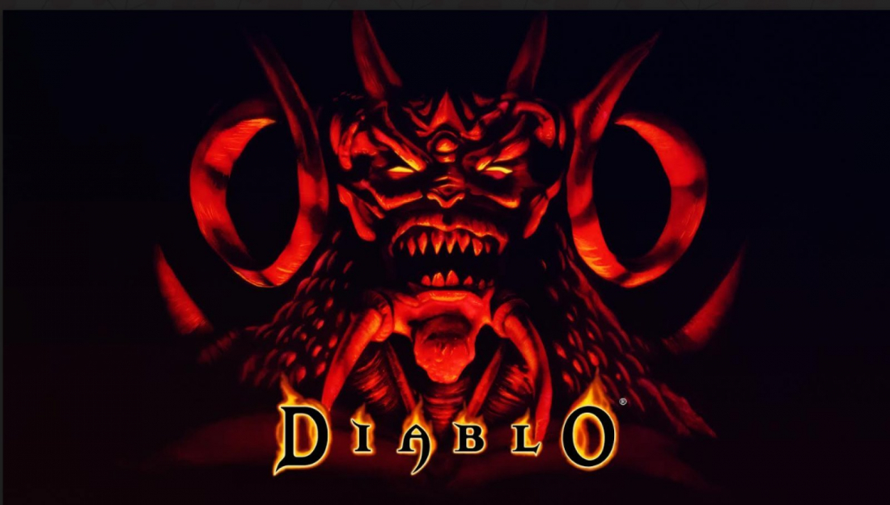

디아블로(Diablo) 는 액션 롤플레잉 핵 앤 슬래시 비디오 게임으로 블리자드 노스가 개발하고 , 블리자드 엔터테인먼트에 의해 1996년 12월 31일 발매되었다. 가상 왕국인 성역 세계의 칸두라스를 배경으로 하며, 디아블로의 플레이어는 영웅으로써 공포의 군주 디아블로를 제거하기 위해 홀로 전투를 벌인다.
트리스트럼 마을 아래, 플레이어는 16층의 무작위로 형성된 지하 미궁을 지나치며, 지옥으로 진입해 디아블로를 상대한다. 디아블로: 지옥불로 명명된 확장팩이 1997년 시에라 엔터테인먼트에서 출시되었다. 1998년에는 디아블로가 플레이스테이션으로 발매되었다.이 플랫폼에서는 영웅을 플레이스테이션 게임 패드로 조종하며 클라이맥스 스튜디오에서 개발되었다.